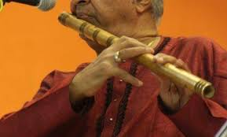

Flute, wind instrument in which the sound is produced by a stream of air directed against a sharp edge, upon which the air breaks up into eddies that alternate regularly above and below the edge, setting into vibration the air enclosed in the flute. In vertical, end-vibrated flutes—such as the Balkan kaval, the Arabic nāy, and panpipes—the player holds the pipe end to his mouth, directing his breath against the opposite edge. In China, South America, Africa, and elsewhere, a notch may be cut in the edge to facilitate sound generation (notched flutes). Vertical nose flutes are also found, especially in Oceania. In transverse, or cross, flutes (i.e., horizontally held and side blown), the stream of breath strikes the opposite rim of a lateral mouth hole. Vertical flutes such as the recorder, in which an internal flue or duct directs the air against a hole cut in the side of the instrument, are known as fipple, or whistle, flutes. Flutes are typically tubular but may also be globular, as with the ocarina and primitive gourd flutes. If a tubular flute is stopped at the lower end, its pitch is an octave lower than that of a comparable open flute. The earliest example of a Western end-blown flute was discovered in 2008 at Hohle Fels cave near Ulm, Ger. The flute, made from the bone of a griffin vulture, has five finger holes and measures about 8.5 inches (22 cm) long. It is thought to be at least 35,000 years old. Discoveries elsewhere in southwestern Germany yielded other flutes thought to be of similar age.
The characteristic flute of Western music is the transverse flute held sideways to the right of the player. It was known in ancient Greece and Etruria by the 2nd century BCE and was next recorded in India, then China and Japan, where it remains a leading wind instrument. In the 16th century the tenor flute, pitched in G, was played in consort with descant and bass flutes (pitched in D and C respectively). All were typically of boxwood with six finger holes and no keys, semitones being made by cross-fingering (uncovering the holes out of sequence), and retained the cylindrical bore of their Asiatic bamboo relatives. These 16th-century flutes were made obsolete late in the 17th century by the one-keyed conical flute, probably conceived by the celebrated Hotteterre family of makers and players in Paris. A conical flute is made in separate joints, the head joint being cylindrical, the others contracting toward the foot. Two joints were common in the 18th century, the upper being supplied in alternate lengths for tuning purposes. The instrument was known then as the flauto traverso, traversa, or German flute, as distinct from the common flute, usually called the recorder.ean-Pierre Rampal (born Jan. 7, 1922, Marseille, France—died May 20, 2000, Paris) French flutist who brought the flute to new prominence as a concert instrument and demonstrated the appropriateness of the flute as a solo instrument adaptable to a wide range of music, from Baroque masterpieces and English folk songs to improvised jazz. Rampal was the son of a flute teacher but was encouraged to become a doctor, and he attended Marseille Medical School. During World War II he was drafted into a German labour camp, and he abandoned his studies to go underground in Paris. Rampal began taking flute lessons at the Paris Conservatory and garnered attention after winning the school’s prestigious competition. After the war he began his career as a flutist in the Vichy Opéra orchestra (1947–51) and later was first flute at the Paris Opéra (1956–62). In 1968 he joined the faculty of the Paris Conservatory. Particularly devoted to chamber music, Rampal founded the French Wind Quintet in 1945 and the Baroque Ensemble of Paris in 1953. In addition to making international concert tours, he edited music by Baroque composers and taught. In later years he took up conducting. His popularity was in large part due to his extensive recording. Rampal gained admiration for his authentic interpretation of 18th-century music, his smooth, cleanly articulated tone, and his mastery of subtle tonal nuance. André Jolivet and Francis Poulenc composed works for him. Rampal’s autobiography, Music, My Love, was published in 1989.